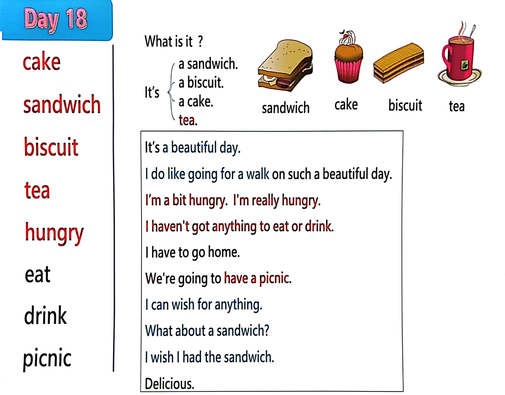

Day 18
Unit 6 · story
教材重点
教材重点依据网盘文件“第二级蓝色每日打卡全.pdf”，第 19 页对应 Day 18；保留文字整理并同时提供原图。
网盘教材重点原图 · PDF 第 19 页对应 Day 18
a biscuit. I t’s cake a sandwich. sandwich biscuit tea hungry eat drink picnic a cake. I t’s a beautiful day. I do l i ke going for a walk on such a beautiful day. I ’m a bit hungry. I ' m really hungry. I haven't got anything to eat or drink. I have to go home. We're going to have a picnic. I can wish for anything. What about a sandwich? I wish I had the sandwich. Delicious. What i s i t ? tea. sandwich cake biscuit tea

Unit 6 · story · 4–6岁
hello · cake · can · look
Hello, hello, hello, hello, everyone. Hello. Hello.
台词本为机器转写，可能存在识别误差；不等同于视频逐字原声。
详细内容
Part 1 核心词汇
必须掌握 · 4 个Part 2 跟读句型与句型拓展
左侧保留台词本原句，右侧为替换练习；拓展内容不是视频逐字台词。
Hello, hello, hello, hello, everyone. Hello. Hello.
Hello. Hello.
Everyone say, hello. Everyone.
Cake, sandwich, biscuit and tea.
Oh, I do like going for a walk on such a beautiful day.
Part 3 台词本全文
来源：第2级台词本 · 018.Wow!Blue - Unit 6 - part 1 story_6_1.pdf。以下保留网盘 PDF 的机器转写文本，仅清理了文件路径页眉和空行。
Hello, hello, hello, hello, everyone. Hello. Hello.
Hello. Hello.
Everyone say, hello. Everyone.
Cake, sandwich, biscuit and tea.
Oh, I do like going for a walk on such a beautiful day.
Getting a bit hungry, though, oh, hi there. Hello. How are you.
It's a beautiful day, and I'm out walking, but I haven't got anything to eat or drink, so.
I have to go home.
I can help, hello, maggie, what do you mean? Well, with a little Maggie magic, we can have a picnic, just
sit down here.
Okay?
Great, looks like we're going to have a picnic, and I'm really hungry.
Okay, maggie, ready, when you are breaking up, what happened?
Tablecloth.
I can't eat a tablecloth, silly, don't eat the tablecloth. It's magic.
Just put it down and wish for what you, okay? HA, HA, right? I can wish for anything. Do I want to eat.
Oh, I know. What about a sandwich? Oh, I wish I had the sandwich.
Wow, look, what is it.
A sandwich. What a delicious sandwich.
Oh, look, what is it? Yeah, it's a sandwich, say it with me.
It's a sandwich.
It's a sandwich.
It's a sandwich. One last time, it's a sandwich, who delicious, oh,
MM, MM,
Oh, maggie, the sandwich is delicious. So could I also have a biscuit.
Oh, I wish I had a biscuit.
A What a big biscuit. A So what is it tap your tummys and stay with me.
It's a biscuit.
It's a biscuit, come on, it's a biscuit, and again, it's a biscuit. Hey.
But with such a big biscuit, I think I'll need some tea, maggie, can I have some.
Wait a minute. Where's my sandwich? Oh, maggie,
/
-
/2/018.Wow!Blue - Unit 6 - part 1 story_6_1.txt[2022/3/29
星期二
6:42:41]
Did you eat my sandwich That's very naughty, but at least I've still got my big biscuit.
And as I said, it'd be nice to have some tea, so.
I wish I had some tea.
Look what's this? Yeah?
It's tea, so pretend to pull with me and ready and say.
It's tea, it's tea. And again,
It's t one last time. It's t, oh, delicious.
Oh, that'll be great with my biscuit. Oh, oh my dear.
Did you eat my biscuit as well as my sandwich?
Are you naughty, naughty bird But at least I've still got my tea.
What goes with tea? Oh, I know.
K, HA, maggie.
I'm going to wish for some cake, and you can't have.
Amy, no, OK, I wish I had a cake.
Wow, tea and cake, look at this. What is it.
Yeah, it's Ah, cake, oh, so stamp your feet and say with me.
It's a cake, it's a cake, come on, it's a cake once more. It's a.
Oh, delicious.
Cake and tea, oh, where's my tea, maggie, I've had inner, I don't believe it.
Maggie, you've taken everything, you naughty, naughty bird.
Look out your cake is ready to lie, it's ready.
Don't be silly, maggie, cakes can't run away. Look, my cake.
Is running away, oh, I'm sorry, maggie, it wasn't you, it was the ants.
There's my sandwich and my biscuit, my table, maggie, help me catch my picnic.
See you next time. Bye bye, come here.